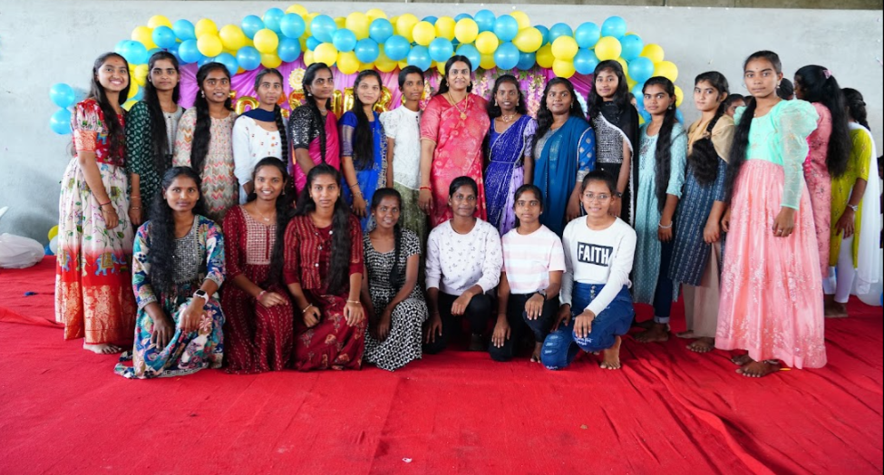
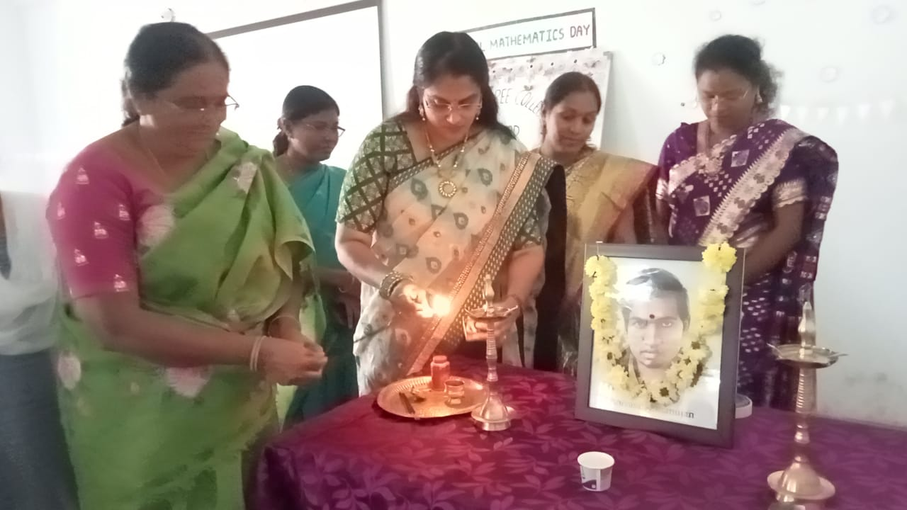
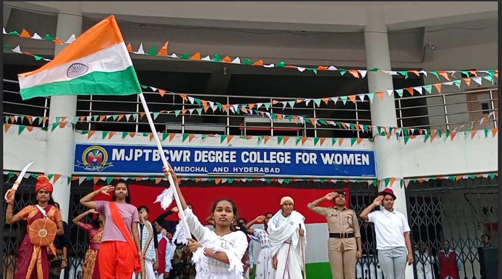
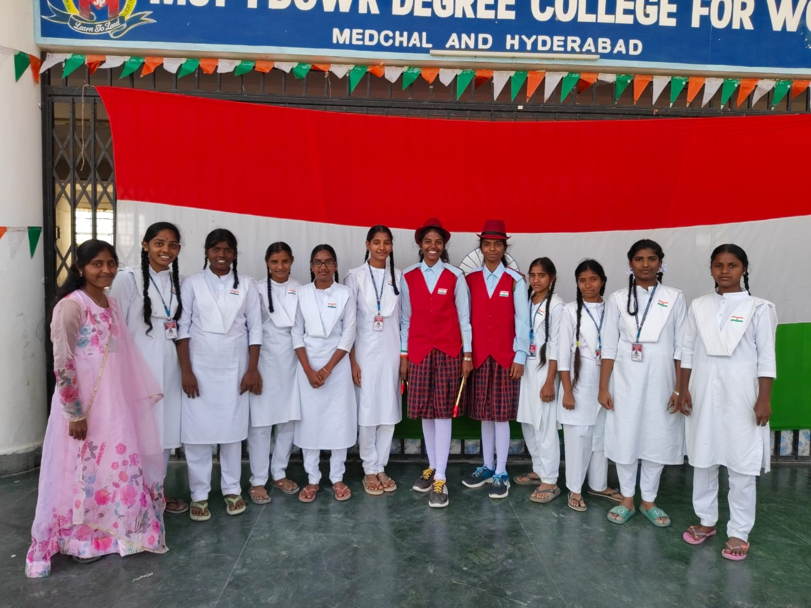
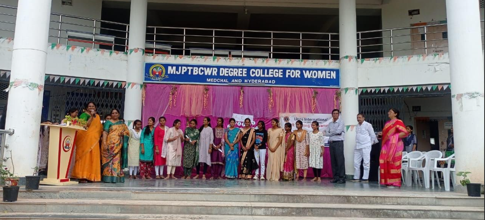
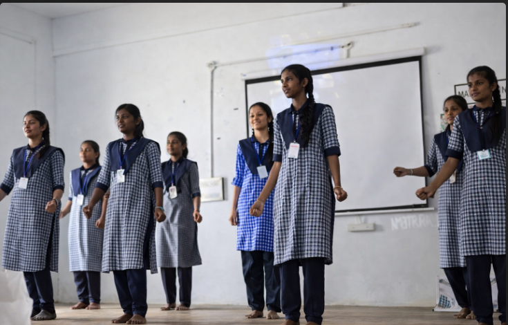
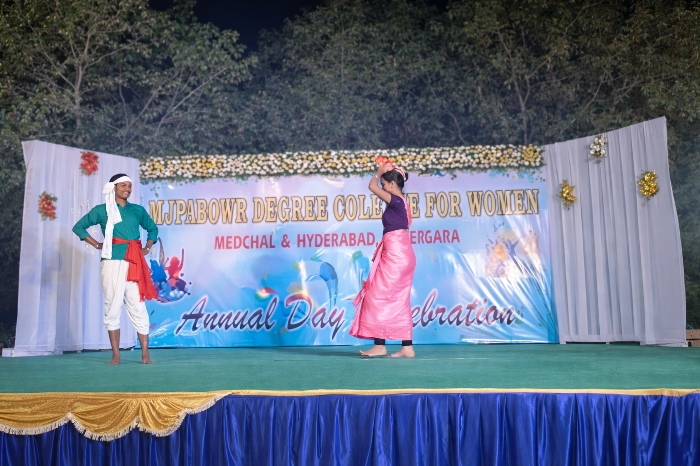
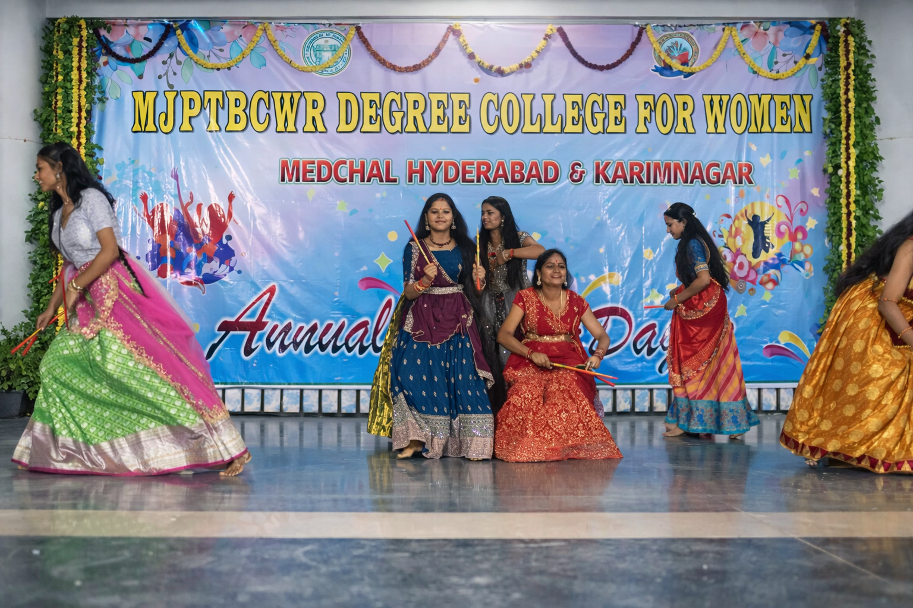

MAHATMA JYOTHIBA PHULE
TELANGANA BACKWARD CLASSES
WELFARE RESIDENTIAL
DEGREE COLLEGE FOR WOMEN
Medchal & Hyderabad

India’s Independence Day 2025 was celebrated on 15 August 2025, marking the nation’s freedom from British colonial rule first attained on 15 August 1947. On this day, the Prime Minister unfurled the national tricolour at the historic Red Fort in New Delhi and delivered a speech to the nation.
Across the country, people celebrated with flag-hoisting ceremonies, cultural programmes, patriotic performances, and community events. Independence Day remains a day of national pride and unity.


Freshers’ Day is a special event organized in colleges to welcome new students who have recently joined the institution. It is usually arranged by senior students and teachers to make newcomers feel comfortable and part of the community.
Various cultural programs such as dance, music, games, and fun activities are organized. It helps new students interact with others and build new friendships in a joyful environment.



Teachers’ Day in India is celebrated every year on September 5 to honor the birth anniversary of Dr. Sarvepalli Radhakrishnan, a respected teacher and the second President of India.
Students express gratitude to their teachers through speeches, cards, and cultural activities. The day recognizes the important role teachers play in shaping students' lives and society.


Mathematics Day in India is celebrated every year on December 22 to honor the birth anniversary of Srinivasa Ramanujan, one of the greatest mathematicians in history.
Schools and colleges organize quizzes, competitions, and seminars to encourage students to explore the beauty and importance of mathematics.



Republic Day is celebrated every year on January 26. It marks the adoption of the Constitution of India in 1950, making India a sovereign republic.
The day is celebrated with patriotic programs, flag-hoisting ceremonies, and the grand Republic Day parade in New Delhi.



Savitribai Phule was one of the first female teachers in India and a great social reformer. She worked for women's education and equality during a time when girls were not allowed to study.
Her birthday is celebrated to honor her contributions to education and social reform.


National Science Day in India is celebrated every year on February 28 to commemorate the discovery of the Raman Effect by scientist C. V. Raman.
Schools and colleges organize exhibitions, science fairs, and seminars to encourage interest in science and technology.


International Women’s Day is celebrated worldwide on March 8 to recognize the achievements of women in social, economic, cultural, and political fields.
Programs such as seminars, awareness campaigns, and cultural events are organized to promote gender equality and women empowerment.


Annual Day is an important celebration in schools and colleges where students showcase their talents through cultural activities such as dance, music, drama, and speeches.
Awards and certificates are given to students for achievements in academics, sports, and extracurricular activities.


Annual Day is an important celebration in schools and colleges where students showcase their talents through cultural activities such as dance, music, drama, and speeches.
Awards and certificates are given to students for achievements in academics, sports, and extracurricular activities.


Farewell Day is organized to bid goodbye to students who are completing their studies. Junior students arrange the event to appreciate and honor their seniors.
Students share memories, perform cultural activities, and wish the departing students success in their future careers.

